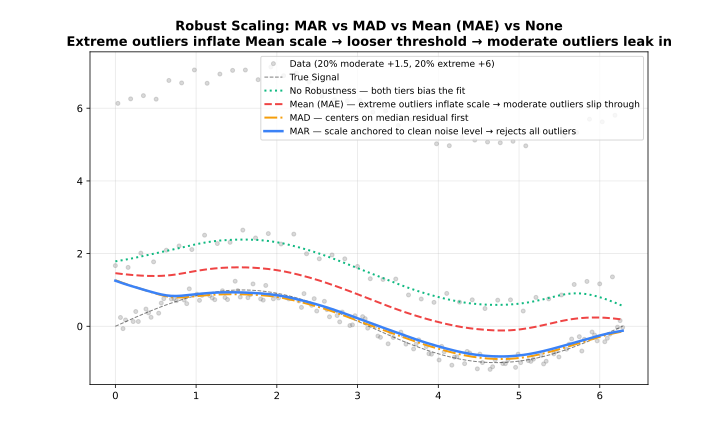
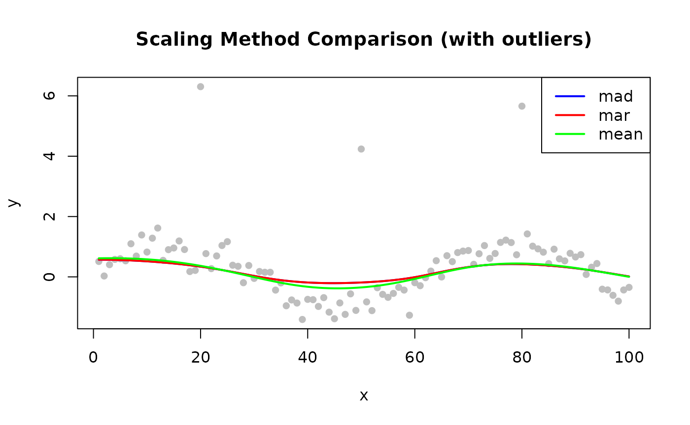

Overview
When iterations > 0, LOWESS computes robustness
weights by comparing each residual to the current residual scale
estimate. The scaling_method parameter controls how that
scale is measured.
The robustness weight for point is:
where is the bisquare function and is the scale estimate. A larger makes the algorithm more tolerant of large residuals; a smaller one makes it more aggressive.
| Method | Formula | Robustness | Speed |
|---|---|---|---|
"mad" |
Median absolute deviation from median | Very robust | Moderate |
"mar" |
Median of |residuals| | Robust | Fast |
"mean" |
Mean of |residuals| | Less robust | Fastest |

MAD — Median Absolute Deviation (Default)
First centers residuals at their median, then takes the median of the absolute deviations. Double use of the median makes it highly resistant to extreme outliers.
Use when: Data may contain outliers (default for most applications).
library(rfastlowess)
set.seed(42)
x <- seq(0, 2 * pi, length.out = 100)
y <- sin(x) + rnorm(100, sd = 0.3)
model <- Lowess(iterations = 3, scaling_method = "mad")
result <- fit(model, x, y)
cat("First 6 smoothed values (MAD scaling):\n")
#> First 6 smoothed values (MAD scaling):
print(head(result$y))
#> [1] 0.4862648 0.4942855 0.5026953 0.5114688 0.5205144 0.5296957MAR — Median Absolute Residual
Slightly less robust than MAD because it does not center residuals first, but faster to compute.
Use when: Residuals are roughly symmetric around zero; speed is a concern.
model <- Lowess(iterations = 3, scaling_method = "mar")
result <- fit(model, x, y)
cat("First 6 smoothed values (MAR scaling):\n")
#> First 6 smoothed values (MAR scaling):
print(head(result$y))
#> [1] 0.4870733 0.4951594 0.5036339 0.5124703 0.5215762 0.5308144Mean Absolute Residual
Least robust — influenced by outliers. Matches classic OLS residual scale.
Use when: No outliers expected; comparisons with classical methods.
model <- Lowess(iterations = 3, scaling_method = "mean")
result <- fit(model, x, y)
cat("First 6 smoothed values (mean scaling):\n")
#> First 6 smoothed values (mean scaling):
print(head(result$y))
#> [1] 0.5023604 0.5119281 0.5219198 0.5323007 0.5429772 0.5538188Comparing Scaling Methods
library(rfastlowess)
set.seed(42)
x <- 1:100
y <- sin(x / 10) + rnorm(100, sd = 0.3)
y[c(20, 50, 80)] <- y[c(20, 50, 80)] + 5 # outliers
methods <- c("mad", "mar", "mean")
colors <- c("blue", "red", "green")
plot(x, y, pch = 16, col = "gray",
main = "Scaling Method Comparison (with outliers)")
for (i in seq_along(methods)) {
model <- Lowess(iterations = 3, scaling_method = methods[i])
result <- fit(model, x, y)
lines(result$x, result$y, col = colors[i], lwd = 2)
}
legend("topright", methods, col = colors, lwd = 2)
sessionInfo()
#> R version 4.6.1 (2026-06-24)
#> Platform: x86_64-pc-linux-gnu
#> Running under: Ubuntu 24.04.4 LTS
#>
#> Matrix products: default
#> BLAS: /usr/lib/x86_64-linux-gnu/openblas-pthread/libblas.so.3
#> LAPACK: /usr/lib/x86_64-linux-gnu/openblas-pthread/libopenblasp-r0.3.26.so; LAPACK version 3.12.0
#>
#> locale:
#> [1] LC_CTYPE=C.UTF-8 LC_NUMERIC=C LC_TIME=C.UTF-8
#> [4] LC_COLLATE=C.UTF-8 LC_MONETARY=C.UTF-8 LC_MESSAGES=C.UTF-8
#> [7] LC_PAPER=C.UTF-8 LC_NAME=C LC_ADDRESS=C
#> [10] LC_TELEPHONE=C LC_MEASUREMENT=C.UTF-8 LC_IDENTIFICATION=C
#>
#> time zone: UTC
#> tzcode source: system (glibc)
#>
#> attached base packages:
#> [1] stats graphics grDevices utils datasets methods base
#>
#> other attached packages:
#> [1] rfastlowess_3.0.0
#>
#> loaded via a namespace (and not attached):
#> [1] digest_0.6.39 desc_1.4.3 R6_2.6.1 fastmap_1.2.0
#> [5] xfun_0.60 cachem_1.1.0 knitr_1.51 htmltools_0.5.9
#> [9] rmarkdown_2.31 lifecycle_1.0.5 cli_3.6.6 sass_0.4.10
#> [13] pkgdown_2.2.1 textshaping_1.0.5 jquerylib_0.1.4 systemfonts_1.3.2
#> [17] compiler_4.6.1 tools_4.6.1 ragg_1.5.2 bslib_0.12.0
#> [21] evaluate_1.0.5 yaml_2.3.12 otel_0.2.0 jsonlite_2.0.0
#> [25] rlang_1.3.0 fs_2.1.0 htmlwidgets_1.6.4